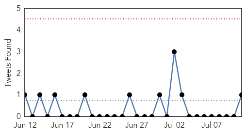
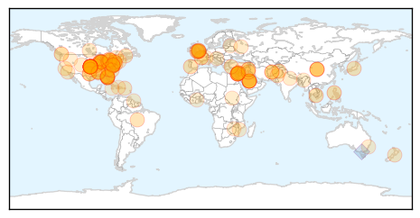
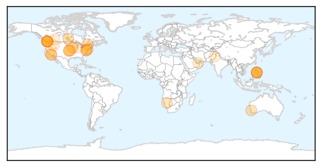

Unknown
30-Day Web Trend
1 alerts, 0 warnings

30-Day Twitter Trend
0 alerts, 0 warnings

Article Locations
Article Confidences
Top Articles:
- 0.999
- World Health Organization says spread of MERS virus isn't yet a worldwide health emergency
- 0.999
- Lebanon records its first case of potentially fatal Middle East respiratory virus
- 0.997
- Saudi MERS data review shows 50 pct jump in number of deaths
- 0.997
- WHO, experts raise questions about newly revealed Saudi MERS cases
- 0.997
- Asia should stay vigilant against MERS: WHO
- 0.996
- 2 Orlando hospital workers who had contact with MERS-infected man negative for virus
- 0.991
- MERS unlikely to spread in Asia: WHO expert
- 0.989
- Doctor exposed to Florida MERS case in Canada; he tests negative for virus
- 0.979
- Doctor exposed to MERS in Florida hospital remained healthy, left Canada
- 0.978
- Quebec confirms case of deadly pig virus; farm put under quarantine
- 0.976
- Florida health care workers test negative for MERS after exposure to 2nd confirmed US case
- 0.976
- Prince Edward Island government confirms first case of pig virus
- 0.965
- Federal panel says nasal spray should be first choice against flu for kids ages 2 to 8
- 0.960
- First case of deadly pig virus reported in Quebec
- 0.948
- Manitoba has first case of pig virus; no risk to humans, other animals
- 0.945
- Fifth case of deadly pig virus confirmed on Ontario farm as outbreak spreads
- 0.939
- Health officials confirm Texas death as 4th US case of mad cow-related disease
- 0.937
- Pig virus fears has P.E.I. pork producers on high alert
- 0.926
- Teenager Jessica Livings Says She Caught TB From Her Kitten
- 0.917
- Chicago Tribune
- 0.917
- Chicago Tribune
- 0.917
- Chicago Tribune
- 0.917
- Chicago Tribune
- 0.917
- Chicago Tribune
- 0.917
- Chicago Tribune
- 0.917
- Chicago Tribune
- 0.917
- Chicago Tribune
- 0.917
- Chicago Tribune
- 0.917
- Chicago Tribune
- 0.917
- Chicago Tribune
- 0.917
- Chicago Tribune
- 0.917
- Chicago Tribune
- 0.917
- Chicago Tribune
- 0.910
- The world windows to Thailand
- 0.887
- Tests confirm fourth case of deadly pig virus in Ontario
- 0.876
- Orlando Health says all workers exposed to MERS patient have been cleared to return to work
- 0.870
- Silent CMV virus a rare, dangerous risk for unborn; efforts mount to test and raise awareness
- 0.868
- Lab tests show norovirus to blame for outbreak on cruise ship that sickened nearly 700
- 0.866
- Kurdish peshmerga forces take over two Kirkuk oilfields
- 0.866
- Iraq's top Shi'ite cleric Sistani calls on fighters to respect all people's rights
- 0.866
- Several injured in explosion in western Turkish city
- 0.842
- Ninth encephalitis case confirmed
- 0.834
- Countries prepare to debate destroying last smallpox stocks; scientists urge delay
- 0.831
- Nova Scotia's final shipment of flu vaccine to address pharmacy shortages
- 0.828
- Premature Baby Dies At St Thomas' Hospital, 15 Others Infected, After NHS Drip 'Contaminated'
- 0.826
- 9-year-old girl dies from brain-eating amoeba after swimming in lake
- 0.823
- Deadly Pig Virus Confirmed In Canada
- 0.799
- Anthrax Scare Reveals More US Lab Safety Problems
- 0.797
- HIV found in baby once thought cured
- 0.794
- Deadly pig virus case confirmed in Ontario
Showing top 50 articles...
Top Tweets:
- 0.754
- Flu Fact Friday: Complications of flu can include bacterial pneumonia, ear infections, sinus infections and dehydration,
- 0.510
- Going on a cruise? Viruses like flu can spread easily on cruises. Tips for flu-free cruising: http://t.co/TYsc1I982O FluTravelTips
Measles
30-Day Web Trend
0 alerts, 0 warnings

30-Day Twitter Trend
0 alerts, 0 warnings

Article Locations
Article Confidences

Top Articles:
- 0.996
- Why are Canadian measles outbreaks so much larger than U.S. outbreaks?
- 0.980
- BCIT student sick with measles from Fraser Valley outbreak
- 0.978
- Measles 'early and active' in U.S.
- 0.970
- Manitoba measles case prompts warning about exposure at strip bar
- 0.963
- Never mind SARS or MERS, worry about measles: Commentary
- 0.958
- 100 measles cases reported in Fraser Valley outbreak
- 0.958
- More Suspected Cases In Regina Area, Officials Urge Shots
- 0.956
- Measles outbreaks prompt health officials to remind people to get vaccinated
- 0.915
- B.C. measles outbreak reveals vulnerability of unvaccinated children
- 0.900
- 8th Manitoba measles case has officials warning of exposure at strip bar
- 0.899
- Hospital measles alert
- 0.899
- Measles outbreaks hit 18-year high in Washington state
- 0.893
- Rash Of Measles Illustrates Importance Of Immunization
- 0.865
- Measles warning for two WA hospitals
- 0.823
- Chickenpox hits young cancer patient, despite vaccination
- 0.804
- Measles spreading in Fraser Valley East
- 0.803
- Measles outbreak in Khomas
- 0.798
- Measles Cases Underscore Importance of Immunization
- 0.772
- Metro Calgary Quotes Anti-Vaccine Homeopath Day After Measles Outbreak Declared
- 0.703
- Infant contracted measles from worker at Wichita restaurant
- 0.674
- Baby has latest case of measles to show up in the Edmonton area
- 0.660
- B.C. government won't force measles vaccination amid outbreak
- 0.645
- More probable measles cases in unimmunized children in Saskatchewan
- 0.640
- Anti-Vaxxers Are Stupid and Contagious
- 0.633
- Measles On Canadian Flight Prompts Health Warning
- 0.626
- 2nd measles case confirmed in Edmonton area
- 0.611
- Measles cases hit 18-year high in Washington state
- 0.600
- Saskatchewan reports measles case in baby whose family arrived by air this month
- 0.554
- IDPs woes: Few doctors willing to volunteer for relief work
- 0.552
- Anti-vaccine message from some naturopaths raises concerns
- 0.547
- Ontario Vaccine Rules Get Tougher For School-Age Kids
- 0.517
- Calgary Measles Cases Keep Unvaccinated Students At Home
- 0.510
- Stop the Fear-Based Propaganda About Vaccines
Top Tweets:
-
No tweets found for Jul 11, 2014